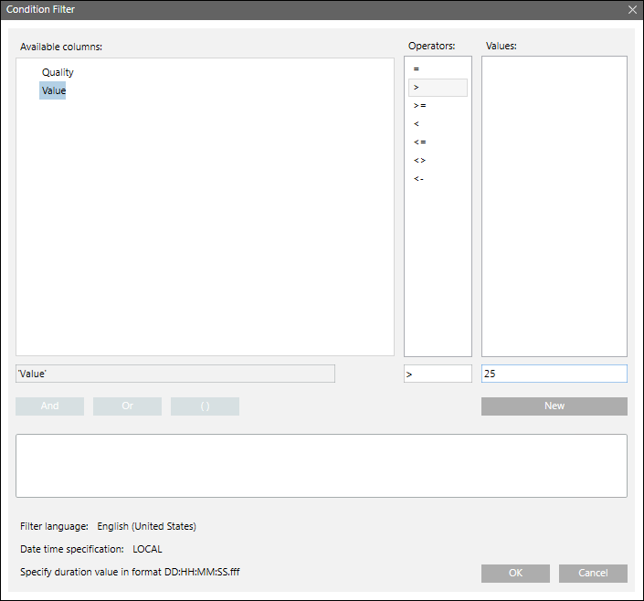
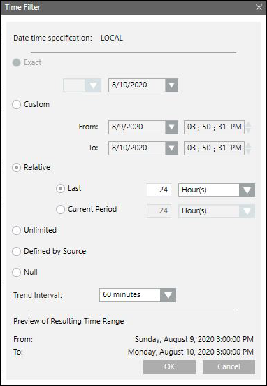
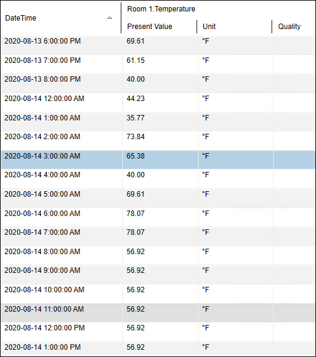
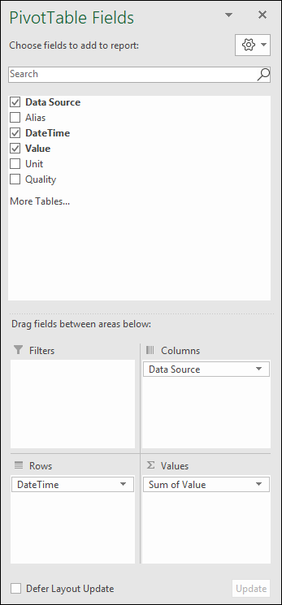

Interval-based Trends Report
An Interval-based Trends Report displays the values of trended points, based on a specified time interval. You can also create a new report definition to store the information in a file, or export it in a variety of formats. You can use this information for weekly performance or for diagnostic type of reports. This report is primarily useful to view the information for a specific time period.
Configuring an Interval based Trends Report
Scenario: You want to create an interval based trends report for any trend log object that would provide values at a given interval.
- For viewing a report in Excel, Microsoft Excel 2007 or later is installed on your system.
- Ensure that a report with the Trends table with the following default set of columns - Date Time, Value, Unit, and Quality is available using one of the procedures. (For example, to create a new report definition, see Create a New Report Definition or a Template report HQ_TrendLog_15Min is already imported into Management Station. For more information, see Import a Report Definition.)
- Drag either an online trend log object from Online Log Objects folder or an offline trend log object/offline trend log multiple object from Offline Log Objects folder, to the Trends table. This object acts as the name filter.
- (Optional) Condition filter is used to specify a condition to filter on a certain value or quality. For example, to view all the records having temperature value greater than 25-degree, perform the following steps and apply the Condition Filter.
a. Right-click the Trends table, and select Filters > Condition Filter. The Condition Filter dialog box displays. The Condition Filter is applied on either Value or Quality column.
b. Select Value from the Available Columns list.
c. Select > from the Operators list.
d. Enter 25 in the Values text field.
e. Click Add. The expression displays in the Filter Expression field.
f. Click OK. - The Condition Filter is added to the table.

- Time filter is used to fetch trends for a specific time range, and at specified intervals. If you want to view the records for a specific duration, select the appropriate date/time values in the Exact, Custom or Relative options. You can also select a Trend Interval, to retrieve a single record for every ‘x’ period. For example, to view records for the last 24-hours, where each record is retrieved for every 60 minutes interval, perform the following steps, and add the Time Filter.
a. Right-click the Trends table, and select Filters > Time Filter. The Time Filter dialog box displays.
b. Select the Relative option.
c. Select the Last option. For more information regarding setting the time period, see Time Filter. In this example, since data is required for the last 24-hours, you must select Last and specify 24 Hour(s).
d. From the Trend Interval drop-down list, select 60 minutes. This is the interval in which the trend data displays.
e. Click OK. 
- (Optional) Click Save
 or Save As
or Save As  .
.
NOTE: If you want to save the configuration of the currently selected report definition as a new report definition, then click Save As. For more information, see Create a New Report Definition from an Existing One. - (Optional) Run the report to view the data.
- The report displays the data for the trend log object where the temperature value is greater than 25-degree in the last 24-hours, and there is an interval of 60 minutes, between records. When a trend interval is selected in the Time Filter dialog box, then Trends table will not display all the values that are present in the selected time duration. The data displays in the report for only the time stamps, which are according to the interval specified in the Time Filter dialog box.

- (Optional) To export the output of report in the Excel format, and to perform additional processing on the trend data while generating an Excel document from the Trends report, for example, in the excel output of a Trends report, if you want to have Data Source (such as, trendlog) as columns, then you can configure Excel template with the report using the PivotTable. For more information, see Viewing a Report Definition in the Excel format with a Template. For above example, configure the PivotTable fields as displayed in the following image.
NOTE: You can add a PivotTable only to the generated Excel document, and it’s fields vary according to the version of the Excel document.

The Advanced Reports for Trend Calculation allows you to generate reports that displays result of a custom calculation between different trend log objects. The Trend Calculation Report and Trend Calculation For XLS Report supports mathematical operators like +, -, /, *, % and mathematical function like SQRT(x), EXP(x), COS(x), SIN(x), TAN(x), LOG(x), POW(x)(y). In order to work with Trend Calculation Reports, you must install the Advanced Reporting extension and add it to a management station project.
For more information, see the Advanced Reporting help (Engineering Step-by-Step > Other Applications > Advanced Reporting > Installing and Configuring Advanced Reports for Trend Calculation).